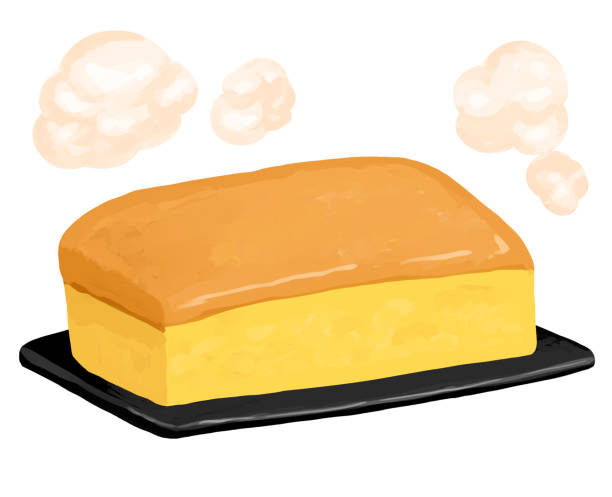

Mochi Cake

Description
Chewy, slightly crispy, and subtly sweet. This mochi cake is the best dessert any Asian could ask for.
As a bonus, it's gluten and lactose free!
Ingredients
- 500 g of glutinous rice flour (or Mochiko)
- 3 eggs
- 75 g of neutral oil
- 455 g of coconut milk
- 200 g of white sugar
- 200 g of red bean paste (azuki)
Steps
- Preheat the oven to 175 degrees Celcius.
- Add all the ingredients except the red bean paste into a mixing bowl.
- Mix all the ingredients until combined.
- Stir in red bean paste. (This can be completely combined or marbled based on preference.)
- Line a 20 x 30 cm baking pan or 2 loaf pans with parchment paper.
- Pour all the batter into the baking pan or equally distribute into the 2 loaf pans.
- Bake for 45-60 minutes, until golden brown.
- Slice into squares and serve hot or let cool down to room temperature for a chewier texture.
Return to home